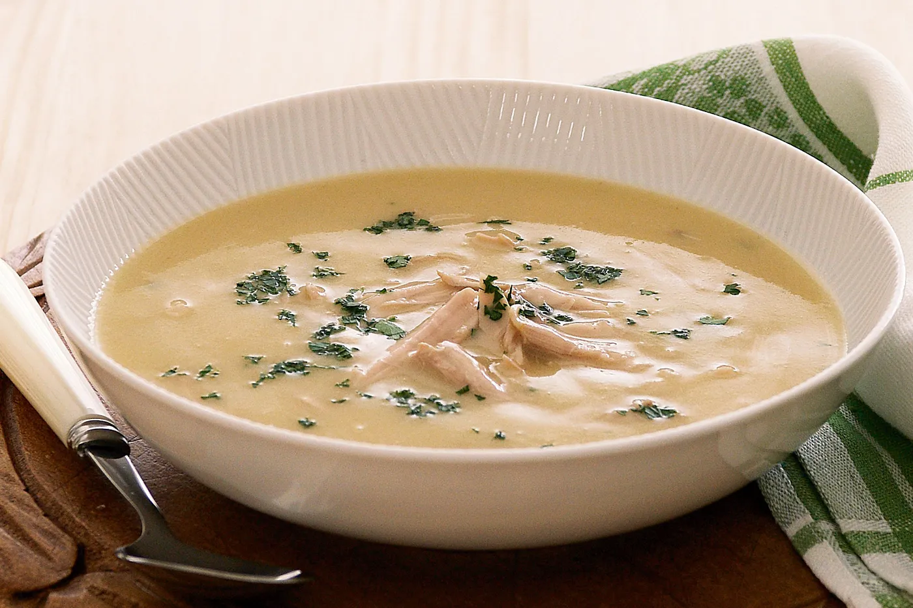

Chicken Soup Recipe

Description
This homemade chicken soup serves two people and the ingredients vary depending on the number of guests. It is simple, straightforward and requires only a few ingredients.
Below you will find a list of ingredients and steps required to make the ultimate bowl of chicken soup.
Ingredients
- Chicken Legs
- Onions
- Garlic
- Black Pepper
- Cream
- Coriander
Steps
- Make the stock by boiling the chicken legs along with the onions, garlic and pepper.
- Remove the chicken and shred it into pieces discarding the skin and bones.
- Return the chicken pieces into the pot and continue simmering before adding the cream. Season to taste and lastly add finely chopped coriander.
- Enjoy !